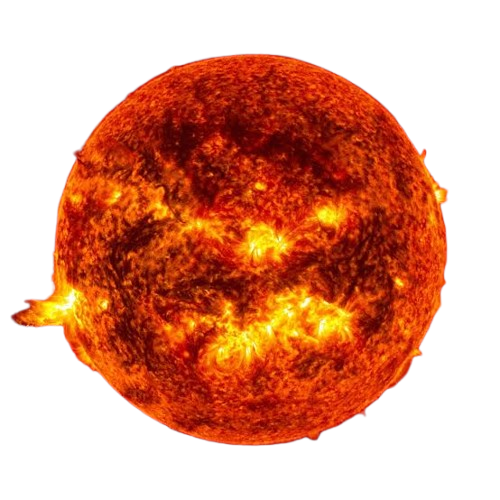

Mass
Approximately 1.988 × 10³⁰ kg. That is around 333,000 times Earth's mass.
At the heart of our solar system lies a giant sphere of glowing plasma. The Sun provides the light and energy that make life on Earth possible, while its gravity holds the planets in their orbits.

The Sun is a star about 4.6 billion years old. It is made mostly of hydrogen and helium and produces energy through nuclear fusion in its core.
This energy travels through space as light and other forms of radiation. Earth receives only a small part of the Sun's energy, but that energy drives weather, helps plants grow, and supports nearly all life.
Although the Sun looks like a bright yellow ball from Earth, it is actually a huge sphere of extremely hot plasma. It contains almost all the mass in our solar system.

The Sun is much larger, hotter, and more massive than any planet in our solar system.
Approximately 1.988 × 10³⁰ kg. That is around 333,000 times Earth's mass.
About 695,700 km. Roughly 109 Earth diameters would fit across the Sun.
Around 1.41 million Earth volumes could fit inside the Sun, ignoring the space between them.
Approximately 15 million°C, hot enough for nuclear fusion to take place.
Surface gravity is about 28 times Earth's. An object's mass stays the same, but its weight would change.
The Sun is made mostly of hydrogen and helium, with small amounts of heavier elements.
The average distance is about 150 million km, also known as one astronomical unit.
The photosphere is about 5,500°C. It is the layer from which most visible sunlight escapes.
The Sun has zero moons. Eight planets and many smaller bodies orbit around it.

Deep inside the Sun, pressure and temperature are so high that hydrogen nuclei can combine to form helium. This process is called nuclear fusion.
A small amount of mass is converted into energy. That energy gradually travels outward before escaping into space as sunlight and other radiation.
The Sun is not a solid surface. Its outer layers are constantly changing, with magnetic activity, sunspots, and enormous eruptions of plasma.

The Sun and the planets formed from the same enormous cloud of gas and dust around 4.6 billion years ago.
Gravity pulled gas and dust together, causing the material to become denser and hotter.
Material gathered at the center, while a spinning disk of leftover gas and dust surrounded it.
The core became hot and dense enough for hydrogen fusion, and the Sun became a star.
Spacecraft help scientists investigate the Sun's atmosphere, magnetic fields, solar wind, and powerful eruptions. The Parker Solar Probe has travelled extremely close to the Sun to collect valuable data.